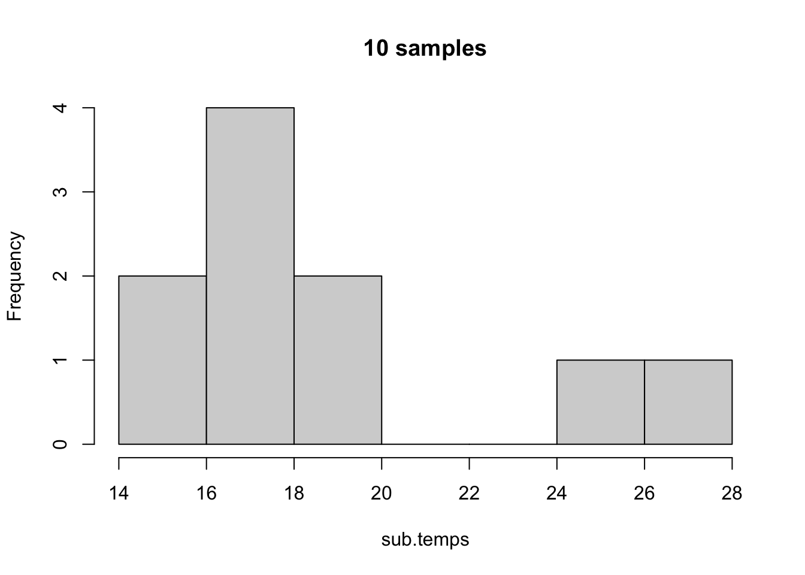
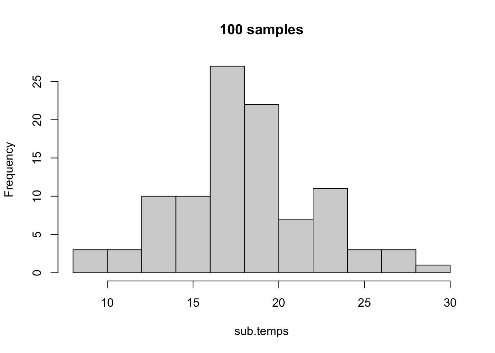

A standard normal distribution is a mathematical model that describes a commonly observed phenomenon in nature. When measuring many different kinds of datasets, the data being measured often becomes something that resembles a standard normal distribution. This distribution is described by the following equation:
This equation is fairly well defined by the variance (\(\sigma^2\)), the overall spread of the data, and by the standard deviation (\(\sigma\)), which is defined by the square root of the variance.
A standard normal distribution, illustrating the percentage of area found within each standard deviation away from the mean. By Ainali on Wikipedia; CC-BY-SA 3.0.
Standard normal distributions have a mean, median, and mode that are equal. The standard normal distribution is a density function, and we are interested in the “area under the curve” (AUC) to understand the relative probability of an event occurring. At the mean/median/mode, the probability on either side of the distribution is \(50\)%. When looking at a normal distribution distribution, it is impossible to say the probability of a specific event occurring, but it is possible to state the probability of an event as extreme or more extreme than the event observed occurring. This is known as the \(p\) value.
6.1.1 Example in nature
An example of naturally occurring normal distributions
In order to see an example of the normal distribution in nature, we are going to examine the BeeWalk survey database from the island of Great Britain (Comont 2020). We are not interested in the bee data at present, however, but in the climatic data from when the surveys were performed.
Rows: 306550 Columns: 49
── Column specification ────────────────────────────────────────────────────────
Delimiter: ","
chr (30): Website.ID, Website.RecordKey, SiteName, Site.section, ViceCounty,...
dbl (19): RecordKey, established, Precision, Transect.lat, Transect.long, tr...
ℹ Use `spec()` to retrieve the full column specification for this data.
ℹ Specify the column types or set `show_col_types = FALSE` to quiet this message.
Note that this is another massive dataset - \(306,550\) rows of data!
We are specifically interested in temperature to determine weather conditions. Let’s see what the mean of this variable is.
mean(beewalk$temperature)
[1] NA
Hmmm… we are getting an NA value, indicating that not every cell has data recorded. Let’s view summary.
summary(beewalk$temperature)
Min. 1st Qu. Median Mean 3rd Qu. Max. NA's
0.00 16.00 19.00 18.65 21.00 35.00 16151
As we can see, \(16,151\) rows do not have temperature recorded! We want to remove these NA rows, which we can do by using using na.omit.
beewalk$temperature |>na.omit() |>mean() |>round(2) # don't forget to round!
[1] 18.65
Now we can record the mean.
Let’s visualize these data using a histogram. Note I do not use na.omit as the hist function automatically performs this data-cleaning step!
hist(beewalk$temperature,breaks =5)
Even with only five breaks, we can see an interesting, normal-esque distribution in the data. Let’s refine the bin number.
hist(beewalk$temperature,breaks =40)
With forty breaks, the pattern becomes even more clear. Let’s see what a standard normal distribution around these data would look like.
# save temperature vector without NA valuestemps <- beewalk$temperature |>na.omit()mu <-mean(temps)t.sd <-sd(temps)# sample random valuesnormal.temps <-rnorm(length(temps), # sample same size vectormean = mu,sd = t.sd)hist(normal.temps, breaks =40)
As we can see, our normal approximation of temperatures is not too dissimilar from the distribution of temperatures we actually see!
Let’s see what kind of data we have for temperatures:
Oftentimes, we will see things approach the normal distribution as we collect more samples. We can model this by subsampling our temperature vector.
# make reproducibleset.seed(1839)sub.temps <-sample(temps,size =10,replace =FALSE)hist(sub.temps, main ="10 samples")
With only ten values sampled, we do not have much of a normal distribution. Let’s up this to \(100\) samples.
sub.temps <-sample(temps,size =100,replace =FALSE)hist(sub.temps, main ="100 samples",breaks =10)

Now we are starting to see more of a normal distribution! Let’s increase this to \(1000\) temperatures.
sub.temps <-sample(temps,size =1000,replace =FALSE)hist(sub.temps, main ="1000 samples", breaks =40)

Now the normal distribution is even more clear. As we can also see, the more we sample, the more we approach the true means and distribution of the actual dataset. Because of this, we can perform experiments and observations of small groups and subsamples and make inferences about the whole, given that most systems naturally approach statistical distributions like the normal!
6.2 Hypothesis testing
Since we can define specific areas under the curve within these distributions, we can look at the percentage of area within a certain bound to determine how likely a specific outcome would be. Thus, we can begin to test what the probability of observing an event is within a theoretical, probabilistic space. A couple of important conceptual ideas:
We may not be able to know the probability of a specific event, but we can figure out the probability of events more extreme or less extreme as that event.
If the most likely result is the mean, then the further we move away from the mean, the less likely an event becomes.
If we look away from the mean at a certain point, then the area represents the chances of getting a result as extreme or more extreme than what we observe. This probability is known as the \(p\) value.
Once we have a \(p\) value, we can make statements about the event that we’ve seen relative to the overall nature of the dataset, but we do not have sufficient information to declare if this result is statistically significant.
6.2.1 Critical Values - \(\alpha\)
In order to determine if something is significant, we compare things to a critical value, known as \(\alpha\). This value is traditionally defined as \(0.05\), essentially stating that we deem an event as significant if \(5\)% or fewer of observed or predicted events are as extreme or more extreme than what we observe.
Your value should always set your\(\alpha\)critical value before you do your experiments and analyses.
Our critical value of \(\alpha\) represents our criterion for rejecting the null hypothesis. We set our \(\alpha\) to try to minimize the chances of error.
Type I Error is also known as a false-positive, and is when we reject the null hypothesis when the null is true.
Type II Error is also known as a false-negative, and is when we support the null hypothesis when the null is false.
By setting an \(\alpha\), we are creating a threshold of probability at which point we can say, with confidence, that results are different.
6.2.2 Introduction to \(p\) values
Let’s say that we are looking at a dataset defined by a standard normal distribution with \(\mu=0\) and \(\sigma=1\). We draw a random value, \(x\), with \(x=1.6\). What is the probability of drawing a number this extreme or more extreme from the dataset?
First, let’s visualize this distribution:
Click here to view plot creation code.
###THIS WILL TAKE A WHILE TO RUN#### create gigantic normal distribution dataset# will be essentially normal for plotting# rnorm gets random valuesx <-rnorm(100000000)# convert to data framex <-as.data.frame(x)# rename columncolnames(x) <-c("values")# thank you stack overflow for the following# Creating density plotp =ggplot(x, aes(x = values) ) +# generic density plot, no fillgeom_density(fill="lightblue")# Building shaded area# create new plot objectp2 <- p +# add previous step as a "backbone"# rename axesgeom_vline(xintercept =1.6) +xlab("Test Statistic") +ylab("Frequency (Probability)") +# make it neat and tidytheme_classic()
# plot it# can use ggsave function to saveplot(p2)
Above, the solid black line represents \(x\), with the illustrated standard normal distribution being filled in blue.
Let’s see how much of the area represents values as extreme or more extreme as our value \(x\).
Click here for code to create figure.
### THIS WILL TAKE A WHILE TO RUN #### Getting the values of plot# something I wasn't familiar with before making this!d <-ggplot_build(p)$data[[1]]# Building shaded area# create new plot objectp2 <- p +# add previous step as a "backbone"# add new shaded areageom_area(data =subset(d, x <1.6), # select area# define color, shading intensity, etc.aes(x=x,y=y), fill ="white", alpha =1) +# add value linegeom_vline(xintercept =1.6, colour ="black", linetype ="dashed",linewidth =1) +# rename axesxlab("Test Statistic") +ylab("Frequency (Probability)") +# make it neat and tidytheme_classic()
# plot it# can use ggsave function to saveplot(p2)
Now we can see that it is only a portion of the distribution as extreme or more extreme than the value we placed on the graph. The area of this region is our \(p\) value. This represents the probability of an event as extreme or more extreme occurring given the random variation observed in the dataset or in the distribution approximating the dataset. This is the value we compare to \(\alpha\) - our threshold for rejecting the null hypothesis - to determine whether or not we are going to reject the null hypothesis.
Let’s look at the above graph again, but let’s visualize a two-tailed \(\alpha\) around the mean with a \(95\)% confidence interval. First, we need to get the \(Z\) scores for our \(\alpha=0.05\), which we calculate by taking \(\frac{\alpha}{2}\) to account for the two tails. (Two tails essentially meaning we reject the null mean if we see things greater than or less than our expected value to a significant extent). We can calculate \(Z\) scores using qnorm.
The above values make sense, given the distribution is symmetrical. Our above dashed line is as \(Z = 1.96\), which means we should have a \(p = 0.05\), so the dashed line should be closer to the mean than our cutoffs.
Click here for code to create figure.
### THIS WILL TAKE A WHILE TO RUN #### Getting the values of plot# something I wasn't familiar with before making this!d <-ggplot_build(p)$data[[1]]# Building shaded area# create new plot objectp2 <- p +# add previous step as a "backbone"# add new shaded areageom_area(data =subset(d, x <1.96), # select area# define color, shading intensity, etc.aes(x=x,y=y), fill ="white", alpha =1) +# add value linegeom_vline(xintercept =1.96, colour ="black", linetype ="dashed",linewidth =1) +geom_vline(xintercept = low_alpha, colour ="red", linetype ="solid",linewidth =1) +geom_vline(xintercept = hi_alpha, colour ="red", linetype ="solid",linewidth =1) +# rename axesxlab("Test Statistic") +ylab("Frequency (Probability)") +# make it neat and tidytheme_classic()
# plot it# can use ggsave function to saveplot(p2)
Exactly as we calculated, we see that our \(p < \alpha\) and thus we do not see an area (in blue) less than the area that would be further than the mean as defined by the red lines.
6.2.3 Calculating a \(Z\) score
When we are trying to compare our data to a normal distribution, we need to calculate a \(Z\) score for us to perform the comparison. A \(Z\) score is essentially a measurement of the number of standard deviations we are away from the mean on a standard normal distribution. The equation for a \(Z\) score is:
\[
Z = \frac{\bar{x}-\mu}{\frac{\sigma}{\sqrt{n}}}
\]
Where \(\bar{x}\) is either a sample mean or a sample value, \(\mu\) is the population mean, \(\sigma\) is the population standard deviation and \(n\) is the number of individuals in your sample (\(1\) if comparing to a single value).
We can calculate this in R using the following function:
zscore <-function(xbar, mu, sd.x, n =1){ z <- (xbar - mu)/(sd.x/sqrt(n))return(z)}
NOTE that is the above isn’t working for you, you have a mistake somewhere in your code. Try comparing - character by character - what is listed above to what you have.
Let’s work through an example, where we have a sample mean of \(62\) with \(5\) samples compared to a sample mean of \(65\) with a standard deviation of \(3.5\).
Z <-zscore(xbar =62, # sample meanmu =65, # population meansd.x =3.5, # population standard deviationn =5) # number in sampleprint(Z)
[1] -1.91663
Now, we can calculate the \(p\) value for this \(Z\) score.
pnorm(Z)
[1] 0.0276425
After rounding, we get \(p = 0.03\), a \(p\) that is significant as it is less than our overall \(\alpha\).
6.2.4 Calculating the \(p\) value
We have two different methods for calculating a \(p\) value:
6.2.4.1 Comparing to a \(z\) table
We can compare the \(z\) value we calculate to a \(z\) table, such as the one at ztable.net. On this webpage, you can scroll and find tables for positive and negative \(z\) scores. Note that normal distributions are symmetrical, so you can also transform from negative to positive to get an idea of the area as well. Given that a normal distribution is centered at \(0\), a \(z\) score of \(0\) will have a \(p\) value of \(0.50\).
On the \(z\) tables, you will find the tenths place for your decimal in the rows, and then go across to the columns for the hundredths place. For example, go to the website and find the \(p\) value for a \(z\) score of \(-1.33\). You should find the cell marked \(0.09176\). Note the website uses naked decimals, which we do not use in this class.
For values that aren’t on the \(z\) table, we can approximate its position between different points on the \(z\) table or, if it is extremely unlikely, denote that \(p < 0.0001\).
6.2.4.2 Using R
In R, we can calculate a \(p\) value using the function pnorm. This function uses the arguments of p for our \(p\) value, mean for the mean of our distribution, sd for the standard deviation of our distribution, and also information on whether we want to log-transform \(p\) or if we are testing a specific hypothesis (lower tail, upper tail, or two-tailed). The function pnorm defaults to a standard normal distribution, which would be a \(z\) score, but it can also perform the \(z\) transformations for us if we define the mean and standard deviation.
For example, if we have a \(z\) score of \(-1.33\):
pnorm(-1.33)
[1] 0.09175914
As we can see, we get the same result as our \(z\) table, just with more precision!
There are other functions in this family as well in R, including dnorm for quantiles, qnorm for determining the \(z\) score for a specific \(p\) value, and rnorm for getting random values from a normal distribution with specific dimensions. For now, we will focus on pnorm.
6.2.5 Workthrough Example
When this class was being designed, Hurricane Milton was about to make contact with Florida. Hurricane Milton is considered one of the strongest hurricanes of all time, so we can look at historical hurricane data to determine just how powerful this storm really was. We can get information on maximum wind speeds of all recorded Atlantic hurricanes as of 2024 from Wikipedia.
Click here for details on creating the file for this walkthrough.
# https://stackoverflow.com/questions/59481608/how-to-remove-the-characters-from-a-string-and-leave-only-the-numbers-in-r# cocatenating wikipedia files.hurricanes1 <-list.files("~/Downloads/",pattern ="List_of_Category_1_Atlantic*")speedlist_cat1 <-NULLfor(j in1:length(hurricanes1)){ test <-read_csv(paste0("~/Downloads/", hurricanes1[j])) test <- test[-1,] # remove extra headerfor(i in1:nrow(test)){ speed <- test$`Peak intensity...3`[i] speed2 <-strsplit(speed," ")[[1]][1] speed2 <-gsub("\\D+", "", speed2) speedlist_cat1 <-c(speedlist_cat1,speed2) }}speedlist_cat1 <-as.numeric(speedlist_cat1)# cocatenating wikipedia files.hurricanes2 <-list.files("~/Downloads/",pattern ="List_of_Category_2_Atlantic*")speedlist_cat2 <-NULLfor(j in1:length(hurricanes2)){ test <-read_csv(paste0("~/Downloads/", hurricanes2[j])) test <- test[-1,] # remove extra headerfor(i in1:nrow(test)){ speed <- test$`Peak intensity...3`[i] speed2 <-strsplit(speed," ")[[1]][1] speed2 <-gsub("\\D+", "", speed2) speedlist_cat2 <-c(speedlist_cat2,speed2) }}speedlist_cat2 <-as.numeric(speedlist_cat2)# cocatenating wikipedia files.hurricanes3 <-list.files("~/Downloads/",pattern ="List_of_Category_3_Atlantic*")speedlist_cat3 <-NULLfor(j in1:length(hurricanes3)){ test <-read_csv(paste0("~/Downloads/", hurricanes3[j])) test <- test[-1,] # remove extra headerfor(i in1:nrow(test)){ speed <- test$`Peak intensity...3`[i] speed2 <-strsplit(speed," ")[[1]][1] speed2 <-gsub("\\D+", "", speed2) speedlist_cat3 <-c(speedlist_cat3,speed2) }}speedlist_cat3 <-as.numeric(speedlist_cat3)speedlist_cat3 <-na.omit(speedlist_cat3) |>as.numeric()# cocatenating wikipedia files.hurricanes4 <-list.files("~/Downloads/",pattern ="List_of_Category_4_Atlantic*")speedlist_cat4 <-NULLfor(j in1:1){ test <-read_csv(paste0("~/Downloads/", hurricanes4[j])) test <- test[-1,] # remove extra headerfor(i in1:nrow(test)){ speed <- test$`Peak intensity...3`[i] speed2 <-strsplit(speed," ")[[1]][1] speed2 <-gsub("\\D+", "", speed2) speedlist_cat4 <-c(speedlist_cat4,speed2) }}speedlist_cat4 <-as.numeric(speedlist_cat4)# cocatenating wikipedia files.hurricanes5 <-list.files("~/Downloads/",pattern ="List_of_Category_5_Atlantic*")speedlist_cat5 <-NULLfor(j in1:1){ test <-read_csv(paste0("~/Downloads/", hurricanes5[j])) test <- test[-1,] # remove extra headerfor(i in1:nrow(test)){ speed <- test$`Peak intensity...4`[i] speed2 <-strsplit(speed," ")[[1]][1] speed2 <-gsub("\\D+", "", speed2) speedlist_cat5 <-c(speedlist_cat5,speed2) }}speedlist_cat5 <-as.numeric(speedlist_cat5)speedlist <-c(speedlist_cat1,speedlist_cat2,speedlist_cat3, speedlist_cat4,speedlist_cat5)speedlist <-as.data.frame(speedlist)colnames(speedlist) <-"Hurricane_Windspeed"write_csv(speedlist,path ="~/Documents/GitHub/biol105_unk/assignments/hurricane_speeds.csv")
Rows: 889 Columns: 1
── Column specification ────────────────────────────────────────────────────────
Delimiter: ","
dbl (1): Hurricane_Windspeed
ℹ Use `spec()` to retrieve the full column specification for this data.
ℹ Specify the column types or set `show_col_types = FALSE` to quiet this message.
Above, we have loaded a .csv of one column that has all the hurricane speeds up to 2024. Hurricane Milton is the last row - the most recent hurricane. Let’s separate this one out. We will use [ , ], which defines [rows,columns] to subset data.
We want to compare the windspeed of Milton (180 mph) to the overall distribution of hurricane speeds. We can visualize this at first.
# all hurricaneshist(hurricanes$Hurricane_Windspeed)
Windspeeds are more towards the lower end of the distribution, with strong storms being rarer.
For the sake of this class, we will assume we can use a normal distribution for these data, but if we were doing an official study we would likely need to use a non-parametric test (we will cover these later, but they cover non-normal data).
mu <-mean(other_hurricanes$Hurricane_Windspeed)mu
[1] NA
Hmmm… we need to use na.omit to be sure we do this properly.
This is greater than \(0.5\), so we need to do \(1-p\) to figure things out.
1-pnorm(Z)
[1] 0.000395961
This rounds to \(0.0004\), which means that this is an extremely strong hurricane.
6.2.5.1 Non-normality, for those curious
We can do a Shapiro-Wilk test of normality to see if this dataset is normal.
shapiro.test(other_hurricanes_windspeed)
Shapiro-Wilk normality test
data: other_hurricanes_windspeed
W = 0.88947, p-value < 2.2e-16
A \(p < 0.05\) indicates that these data are non-normal.
We can do a Wilcoxon-Test since these data are extremely non-normal.
wilcox.test(other_hurricanes_windspeed, milton)
Wilcoxon rank sum test with continuity correction
data: other_hurricanes_windspeed and milton
W = 6.5, p-value = 0.08678
alternative hypothesis: true location shift is not equal to 0
Using non-normal corrections, we find that this is not an extremely strong hurricane, but it is near the upper end of what we would consider “normal” under historical conditions. Still an extremely bad hurricane!
6.3 Confidence Intervals
Because we can figure out the probability of an event occurring, we can also calculate confidence intervals. A confidence interval provides a range of numbers around a value of interest that indicates where we believe the mean of a population lies and our confidence that it lies within that range. Note that nothing is ever 100% certain, but this helps us determine where a mean is and demonstrates our confidence in our results.
Specifically, if the tails of the distribution, our \(\alpha\), are \(0.05\), then we have an area of \(0.95\) around the mean where we do not reject results. Another perspective on this area is that we can say with \(95\)% certainty that a mean is within a certain area, and that if values fall within that confidence area then we do not reject the null hypothesis that the means are equal.
We will cover several different ways to calculate confidence intervals, but for normal distributions, we use the following equation, with the \(0.95\) confidence interval shown as an example:
This interval gives us an idea of where the mean should lie. For example, if we are looking at the aforementioned beewalk temperature data, we can calulate a \(0.95\) confidence interval around the mean.
temps <-na.omit(beewalk$temperature)xbar <-mean(temps)n <-length(temps)sdtemp <-sd(temps)# Z for 0.95 as P, so for 0.975, 0.025# get value from PZ <-qnorm(0.975)CI <- Z*(sdtemp/sqrt(n))CI
[1] 0.01458932
We have a very narrow confidence zone, because we have so many measurements. Let’s round everything and present it in a good way.
If I want numbers to show up in text in RMarkdown, I can add code to a line of plain text using the following syntax:
# DO NOT RUN# Format in plaintext`r xbar`
This is the “coded” version of the text below. Compare the above window to the text below this image.
Typing that into the plain text should render as the following: 18.645963. Then I can also type my answer as follows:
The \(95\)% Confidence Interval for the mean for this temperature dataset is:
print(paste(round(xbar, 2),"+/-",round(CI, 2)))
[1] "18.65 +/- 0.01"
Note that the above is rounded to two decimal places to illustrative purposes ONLY, and should be rounded to one decimal place if it was a homework assignment because the original data has only one decimal place.
6.4 Homework: Normal distributions
Submit one html file, as created in RStudio, with you answers to the following questions. For maximum clarity, create headings to separate your problems. (Remember, a header can be invoked by placing ‘#’ in front of a line of text. For example: the header here is written as # Homework: Chapter 8).
6.4.1\(Z\) to \(p\)
For each of the following, report the corresponding \(p\) value for the \(z\) score.
2.3
6.4
-1.5
-9.2
0.3
6.4.2\(P\) to \(z\)
For the following, report the corresponding \(z\) score for the stated \(p\) value. For this question, assume every value is “looking left” (lower.tail = T).
0.96
0.23
0.14
0.0036
0.47
0.62
6.4.3 Confidence intervals
For the following scenarios, calculate the confidence interval for the mean.
As part of a study on how climate affects the weights of Alpine Ibex, researchers recorded the maximum temperature in the spring at their study site (Brambilla et al. 2024). The researchers find another site with an average spring maximum temperature of 6.2ºC, and claim that it is warmer than their study site. Are the correct?
The data for this problem will be in the object spring_temps below:
# load weather dataweather <-read_csv("https://zenodo.org/records/12749273/files/20240505_env_var_dataset.csv")# isolate spring temperaturesspring_temps <- weather$SpringTmax |># remove NA valuesna.omit() |># ensure data are in correct numeric formatas.numeric()
Evaluate their claims by:
Calculating a \(z\)-score for their temperature (6.2ºC).
Calculating a \(p\)-value for their temperature (6.2ºC).
Reporting a 95% confidence interval for the mean for the temperatures reported in their dataset.
In a single sentence, state whether you find this temperature to be significantly warmer than the mean or not, stating what evidence you are using to make this conclusion.
6.4.5 Italian climate - Summer
Using the same dataset (weather) as the previous question, isolate the data for the summer (column SummTmax). The researchers find the average temperature of another site is 13.6ºC, and claim this is warmer than their research site. Are they correct? As with the previous question, complete the following:
Calculating a \(z\)-score for their temperature (13.6ºC).
Calculating a \(p\)-value for their temperature (13.6ºC).
Reporting a 95% confidence interval for the mean for the temperatures reported in their dataset.
In a single sentence, state whether you find this temperature to be significantly warmer than the mean or not, stating what evidence you are using to make this conclusion.
Note for this question, you will have to isolate the column for summer temperatures from the weather dataframe and perform all of the analysis steps yourself.
Brambilla, A., A. von Hardenberg, B. Bassano, L. Ranghetti, L. Keller, and M. Festa-Bianchet (2024). Data from: Climate drives body mass changes in a mountain ungulate: Shorter winters lead to heavier alpine ibex. [Online.] Available at https://doi.org/10.5061/dryad.w9ghx3fz6.